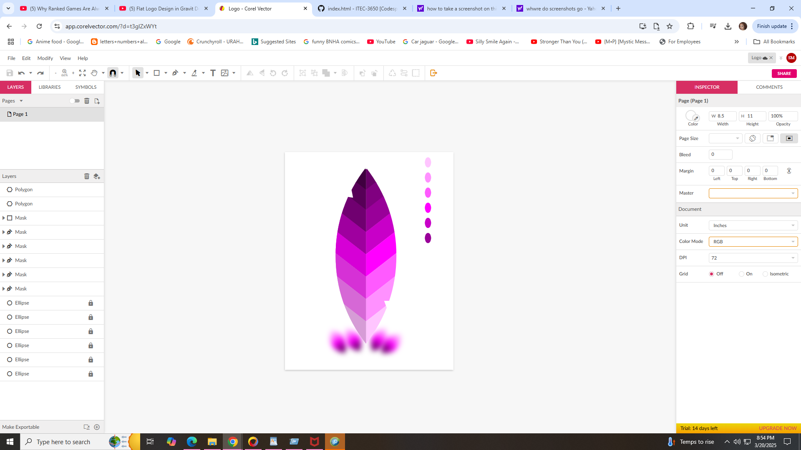

For this blog post, I will be discussing the importance of image optimization. Based on the 2 articles we read out of class. Firsty, "It’s more important than scripts and fonts. And ironically, a good image optimization workflow is one of the easiest things to implement"(Kinsta) Image optimization is a tool used to keep images/photos "pretty" and have good quality as you include them into your website. Including a good quality image helps the website load faster and and make the optimization accessible for every device. Having a website that loads fast, not only upgrades user traffic, but makes those saw users engaged in the website by having something to look at in high quality.
My Logo as a screenshot
My Logo as a download jpg
My Logo as a download png
As you can see, image optimization plays a big roll here. Surprisingly, the PNG looks better than the Jpg AND screenshot. Lookign at the edges, the jpg looks blurry while the png looks clear. That makes me wonder if that's the reason A.I. uses png images when you ask them to generate an image instead of jpg/jpeg.